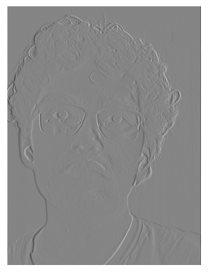
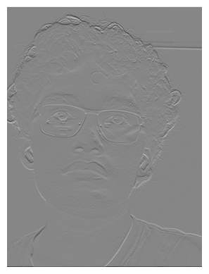
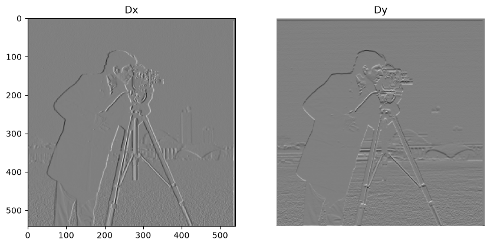
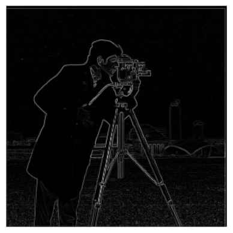
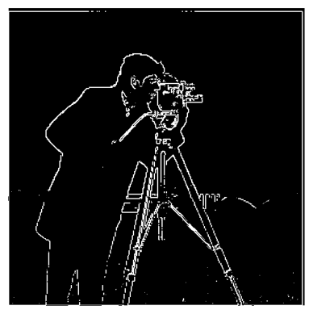

Project 2: Fun with Filters and Frequencies!
Gautam Bhooma · CS 180 · Fall 2026
Part 1: Fun with Filters


The code following implements convolution with 4 and 2 for loops, which are both then applied on a picture of myself alongside scipy.signal.convolve2d as shown above. The visual similarity between the last 3 pictures shows that all convolutions result in the same image.
def convolution4(img, kernel, mode = "same"):
#kernel is 2d array
K = kernel[::-1, ::-1]
p = pad(img, kernel.shape, mode)
H, W = img.shape
kH, kW = kernel.shape
H -= kH - 1
W -= kW - 1
result = np.zeros((H, W))
for i in range(H):
for j in range(W):
sum = 0
for h in range(kH):
for w in range(kW):
sum += p[i + h, j + w] * K[h, w]
result[i][j] = sum
return result
def convolution(img, kernel, mode="same"):
#kernel is 2d array
K = kernel[::-1, ::-1]
p = pad(img, kernel.shape, mode)
H, W = p.shape
kH, kW = kernel.shape
H -= kH - 1
W -= kW - 1
result = np.zeros((H, W))
for i in range(H):
for j in range(W):
sum = np.sum(p[i:i+kH, j:j+kW] * K)
result[i][j] = sum
return result
These images of my face can be convolved with the finite difference operators Dx and Dy, to get the following images. The edges appear weakly because of the high resolution of the images, but they still appear.


These operations can also be done on the cameraman image. First by convolving the image with the finite difference operators, the gradient magnitude can be calculated. Then, by limiting the magnitude by a lower bound (to remove noise), the edges can be isolated, creating an "edge map":



To get a more defined edge map and remove the noise created by the grass, the gray-scaled cameraman image can first be blurred before edges are isolated. This can be done by either blurring the image first then taking the derivatives, or taking the derivative of the Gaussian blur before applying it onto the image. Both of these approaches are done below, to depict identical results.